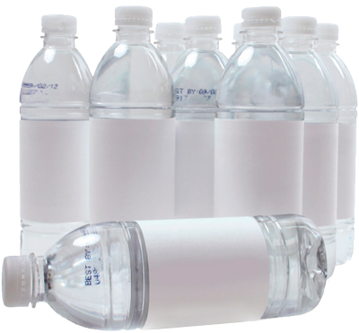

Узнайте какая вода в бутылках лучше
Узнайте какая вода в бутылках лучше
Для того чтобы понять какая вода в бутылках лучше, изначально необходимо разобраться в правдоподобности производителя. Выбирать лучшую воду Вы сможете только после того как научитесь читать информационную составляющую этикетки. На первый взгляд, изобилие минеральных и столовых воды в украинских супермаркетах весьма обширное, но не стоит заблуждаться. Половина из псевдо производителей очищенной воды, разливают ее в бутылки попросту из крана. Некоторые разливают из крана и немного очищают через бытовые фильтры. Итак, как же все-таки не обмануться и выбрать стоящий продукт.
Чтоб понять какая питьевая вода в бутылках лучше ищите ТУ
Рынок очищенных вод Украины изобилует искусственно синтезированной водой, происхождение которой весьма сомнительное, а порой и опасное. Поскольку число любителей минеральных, столовых вод с каждым годом стремительно растет, многие производители нагреваются на производстве обычной воды, указывая на этикетке горы, ледники, источники и прочую "натуральную" чушь. Красивая этикетка продает, и это факт. Но в стремлении быть здоровым и не обманутым, для покупки настоящей полезной воды обращайте внимание на детали указанные далее.

Номер технических условий ТУ 0131
Обязательным условием для коммерческой продажи воды есть прохождение эпидемиологического контроля, который присваивает тот самый номер ТУ. Самая важная и ключевая информация этого номера указанна в первых четырех цифрах. ТУ 0131... означает что это самая обычная вода, которая прошла разнообразные технические и физические манипуляции такие как фильтрация, минерализация, очищение, умягчение. Вода прошедшая такие манипуляции становиться безопасной для употребления, но пользы и толка в ней мало если она не обогащенная полезными компонентами. О насыщении минералами, производители указывают на этикетке.
Номер технических условий ТУ 9185
Маркировка ТУ 9185... чаще всего указывается с номером скважины либо источника из которого она добывалась. Такой вид воды действительно можно назвать минеральной и полезной. Данный вид столовой минеральной воды, зачастую подвергается только механической очистке (он естественного в природе мусора как травинки, листочки и тд) и содержит в себе исключительно минералы и полезные соли. Состав воды в источнике и в бутылке будет идентичным, но не стоит часто пить такую воду, так как она считается уже лечебной и регулярное употребление может вымывать из организма нужные компоненты.
Номер технических условий ГОСТ 13273-88
Такой вид воды является лечебно-столовым. Источники воды расположены зачастую в курортных местностях возле морей и гор. Этикетка с такой водой указывает что вода применима в лечебных целях и для медеценских показаний, отмечаются нормы употребления такой воды. Так же, вода со знаком ГОСТ уточняет важный ионный состав (хлоридный, кальциевый, натриевый и другие). Употребление такой воды предписывается врачами и исключительно в профилактических целях.
Таким образом, если в руки вам попала бутылка на которой указан ГОСТ или ТУ вы с легкостью сможете разобраться какая вода лучше для Вас именно сейчас, а какая питьевая вода в бутылке лучше пусть останется на полке магазина. Для регулярного употребления не стоит пренебрегать простой очищенной водой с маркировкой ТУ 0131, так как она действительно безвредна, а так же бывает вкусной. Зато стоит внимательно относиться к минеральным и лечебно-столовым водам, дабы не навредить своему здоровью и здоровью своих близких.